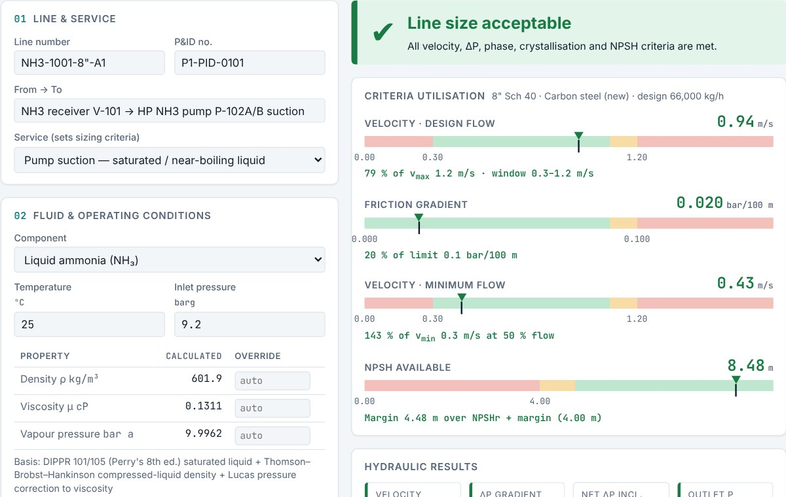
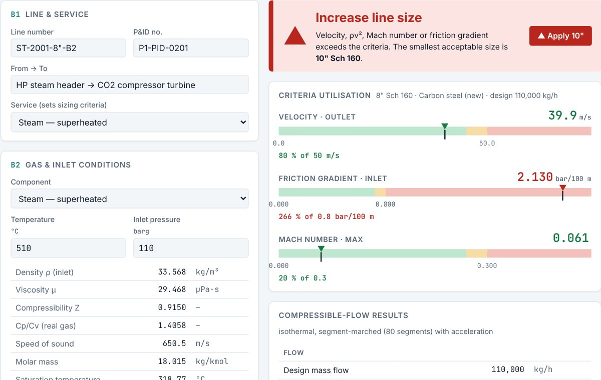
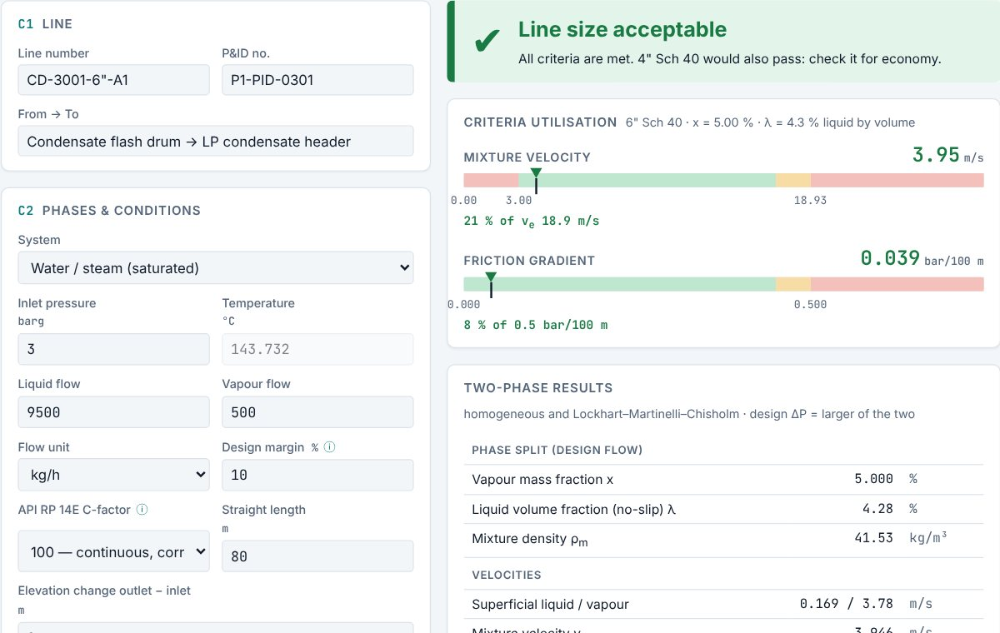
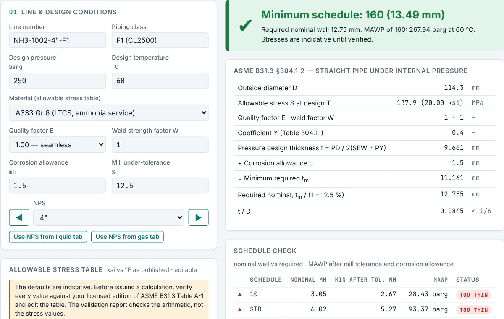
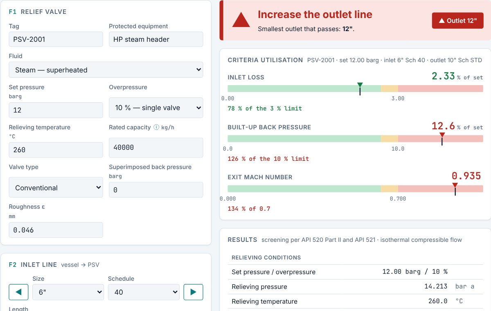
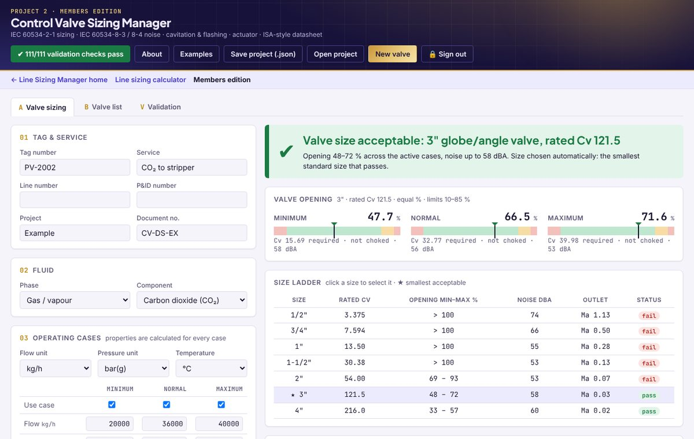

ALiquid lines
Velocity and ΔP limits by service and size band, minimum-flow check, NPSH available, flashing and crystallisation checks. Water, ammonia, urea solution and melt, carbamate.
IAPWS-IF97 · Crane TP-410Size liquid, gas, steam and two-phase lines, control valves and relief-valve piping in one place. Every criterion is shown in colour, and the calculations are checked against reference data.
No sign-up · works offline once loaded · nothing you enter leaves your device

A real case from the calculator: cooling water at 100 m³/h on pump discharge, NPS 2 to 8, Schedule 40 carbon steel. Every number below comes from the same engine you use.
Water at 30 °C and 6 bar(a), IAPWS-IF97; Colebrook–White with ε = 0.046 mm.
The calculator follows the line the way you draw it: source vessel, pump, fittings, control valve and destination, with properties evaluated at every case.
Pick the service and fluid, enter flow and conditions, and step the pipe size with ▶ until the verdict turns green. The size ladder marks the smallest size that passes.
Velocity and ΔP limits by service and size band, minimum-flow check, NPSH available, flashing and crystallisation checks. Water, ammonia, urea solution and melt, carbamate.
IAPWS-IF97 · Crane TP-410Compressible flow marched along the line with acceleration, Mach number, ρv² and ΔP by pressure band. Steam, CO₂, NH₃ vapour, syngas, natural gas, air and custom mixtures.
IF97 · Peng–RobinsonErosional velocity with your C-factor, slugging minimum, homogeneous and Lockhart–Martinelli pressure drop for flashing condensate and ammonia letdown.
API RP 14EPressure design thickness, corrosion allowance and mill tolerance, with the minimum schedule and its MAWP. Editable allowable-stress table.
ASME B31.3 §304.1.2A quick required-Cv and travel check on the line being sized, with choked-flow and cavitation flags, so the line and its valve are screened together.
IEC 60534-2-1PSV inlet loss against the 3 % rule, built-up and total back pressure by valve type, tail-pipe exit Mach and choking.
API 520 Part II · API 521Plus an itemised fittings editor (elbows, tees, valves, reducers and expanders at any size), °C/°F and m/ft units, ASME B36.10M or EN 10220 pipe, Excel line lists, calculation sheets and bulk import pasted from Excel.
Real screens from the free line sizing tool. Choose a module to see it.




Properties are calculated from temperature and pressure for every case, with an override for your simulation data.
Built the way a process engineer sizes a line, so the result reads like a calculation sheet rather than a single number.
Quick, defensible line and valve sizing with the criteria shown, for studies, revamps and troubleshooting.
Consistent criteria, line lists and calculation sheets with document control on every page.
Check whether an existing line, valve or PSV installation can take a new rate.
See how velocity, friction factor, fittings and NPSH interact as you change the size.
Yes. The web edition is free and needs no sign-up. It runs entirely in your browser.
Darcy–Weisbach with Colebrook–White friction, Crane TP-410 fittings, IAPWS-IF97 steam and water, Peng–Robinson gases, API RP 14E for two-phase lines, IEC 60534-2-1 for control valves, API 520 Part II and API 521 for relief valve piping, and ASME B31.3 for wall thickness. Pipe dimensions follow ASME B36.10M/B36.19M or EN 10220.
No. The page makes no network requests while you work. Saved lines stay in your own browser, and exports download straight to your computer.
Use them for screening and preliminary sizing. Results must be checked by a qualified engineer against the project specification and applicable codes before design, procurement or construction. The sizing criteria are typical EPC values and can be edited to match your project.
Yes. Every velocity and pressure-drop limit is editable on the page. Suggestions for new features are welcome through LinkedIn.
The calculator carries its own self-test: 31 reference cases rerun in your browser and compared with independent implementations. Run it any time from the Validation tab.
| Module | Graded checks | Largest deviation |
|---|---|---|
| Liquid properties & hydraulics | 49 | 0.95 % |
| Fittings (Crane K) | 4 | 0.94 % |
| Steam | 15 | 0.12 % |
| Gases | 29 | 5.16 %* |
| Two-phase | 12 | 2.72 % |
| Wall thickness | 16 | 0.00 % |
| Control valves | 6 | 0.89 % |
References used:
* One documented deviation: ammonia-vapour viscosity near saturation reads 5.2 % high against a 5 % tolerance; its effect on pressure drop is about 1 %.
Open the calculator, load an example, and press ▶ until it turns green.
Open the calculator — freeA dedicated control valve tool, separate from the free Line Sizing Manager and available to members only. Built the way EPC instrument and process teams size valves: from operating cases to a datasheet.
